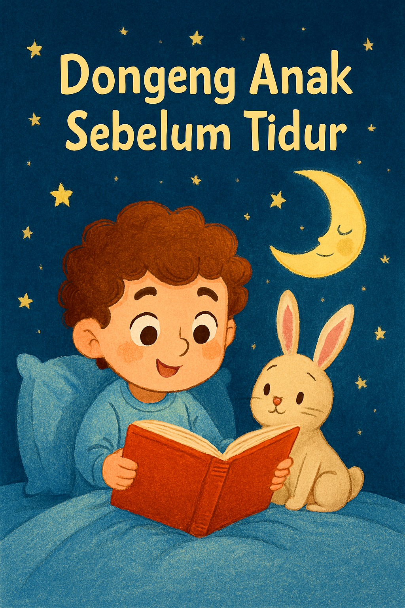
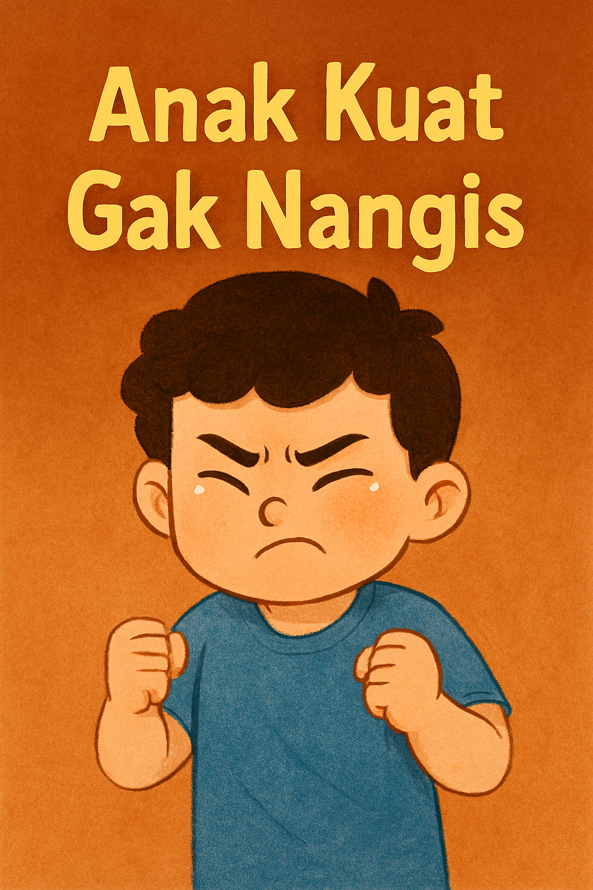
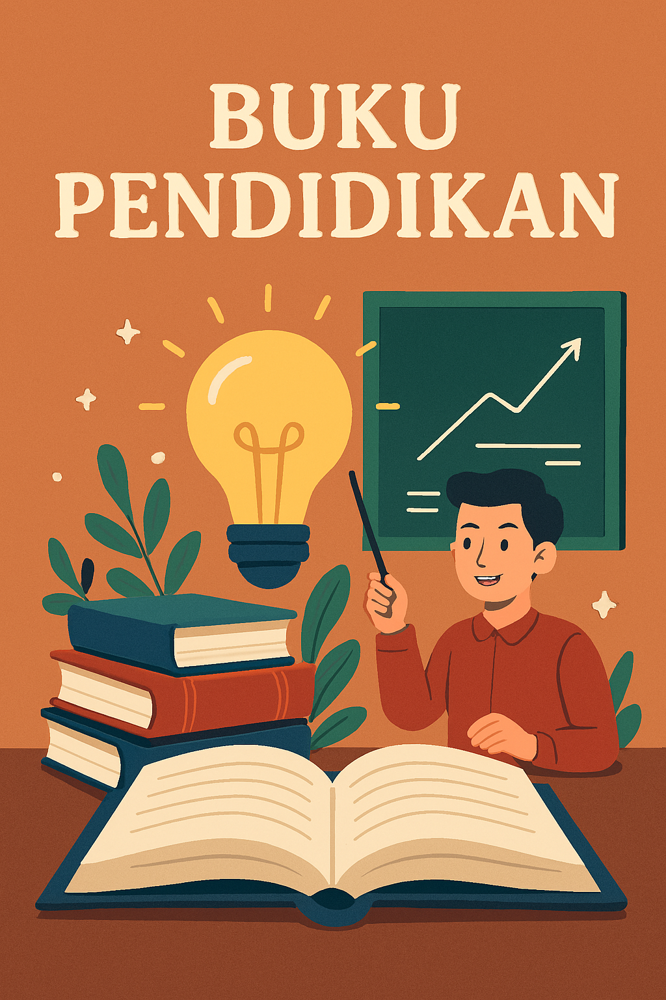

Buku Pemotivasi Semangat anak
Rp.750.000
Bantu si kecil mengenal dunia dengan cara yang seru! Buku ini dirancang khusus untuk anak usia 1-3 tahun dengan ilustrasi warna-warni yang menarik perhatian dan teks sederhana yang mudah diingat dan membantu kreativitas anak selama 3 tahun dikarenakan buku ini memiliki halaman sebanyak bintang di langit.

Buku Cerita Petualangan Anak
Rp550.000
Latih rasa ingin tahu si kecil dengan petualangan yang seru! Di usia 4-5 tahun, anak-anak sedang semangat-semangatnya belajar hal baru. Buku ini dirancang khusus dengan kalimat sederhana dan ilustrasi penuh warna yang akan membuat mereka betah berlama-lama membaca dan mengajarkan tauhid serta cara berbakti kepada kedua orang tua.

Buku Cerita Dongeng Anak
Rp125.500
Apakah Bunda sedang mencari cara agar si kecil tidak kecanduan gadget? Buku ini adalah solusinya! Pada usia emas (golden age), membacakan cerita adalah cara terbaik untuk melatih fokus dan kemampuan bahasa anak dalam 2500 bahasa agar anak tumbuh menjadi orang yang mudah bersosial dengan dunia luar.

Buku Pilihan Bunda
Rp755.000.000
Ajak mereka berkelana mengenal [Sebutkan tema buku, misal: dunia hewan/pertemanan/alam]. Tidak hanya membaca, Bunda juga sedang membangun ikatan batin yang kuat dengan mereka.serta mengajari anak untuk berbicara dengan bahasa hewan Dukung tumbuh kembangnya, jauhkan dari layar, dan buka dunia baru lewat buku ini.

Buku Anak Hebat Pasti Bisa
90.000
Memasuki usia 6-7 tahun adalah masa transisi yang seru dari melihat gambar ke mulai merangkai kata. Buku ini dirancang khusus dengan kalimat yang sederhana namun tetap imajinatif untuk melatih kepercayaan diri si kecil hingga tata cara untuk berpendidikan agar anak suatu saat menjadi presiden.

Kitab Belajar Huruf Arab
900.000
Buku ini mengajarkan huruf huruf bahasa arab agar anak suatu saat dapat menghafal quran dengan mudah

Buku Anak Ngantukan
170.500
buku ini membuat anak sangat suka untuk melakukan tidur dari yang awalnya banyakngomong dan rewel bisa dibacakan buku ini hingga anak tidur selamanya

60.000
buku ini membuat anak sanagat senang untuk bermain diluar dan tidak mau atau takut menjadi anak yang introvert

60.000
Buku ini ditujukan untuk anak anak yang suka belajar dan sangat kepo dengan yang namanya pendididkan dan cocok untuk anak dibawah 150 tahun

60.000
Curiosity atau rasa ingin tahu adalah dorongan alami dalam diri manusia untuk mencari pengetahuan, memahami sesuatu yang belum diketahui, dan mengeksplorasi hal-hal baru. Rasa ingin tahu menjadi salah satu motor utama perkembangan ilmu pengetahuan, kreativitas, dan pembelajaran sepanjang hayat.